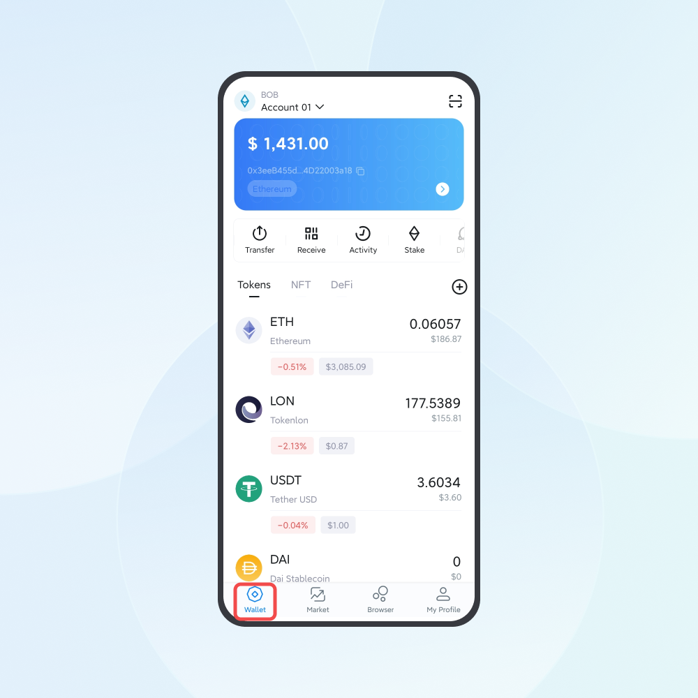
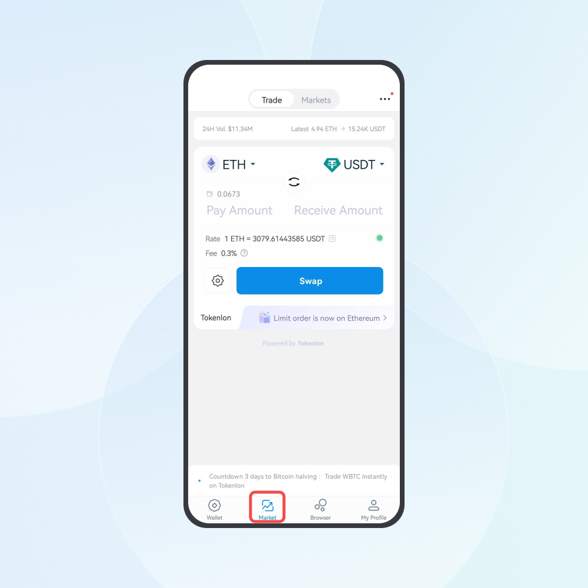
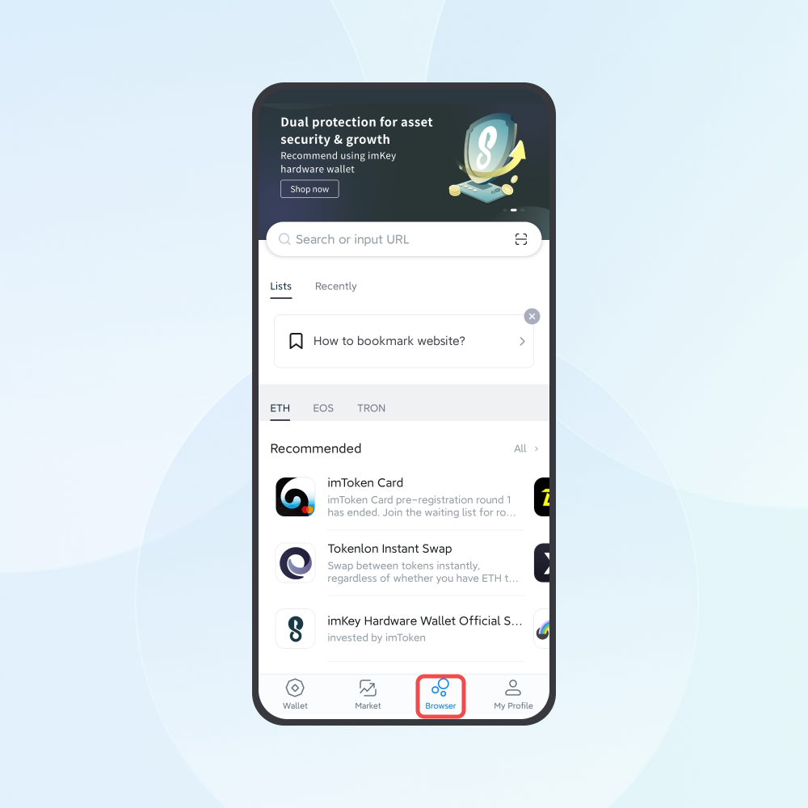
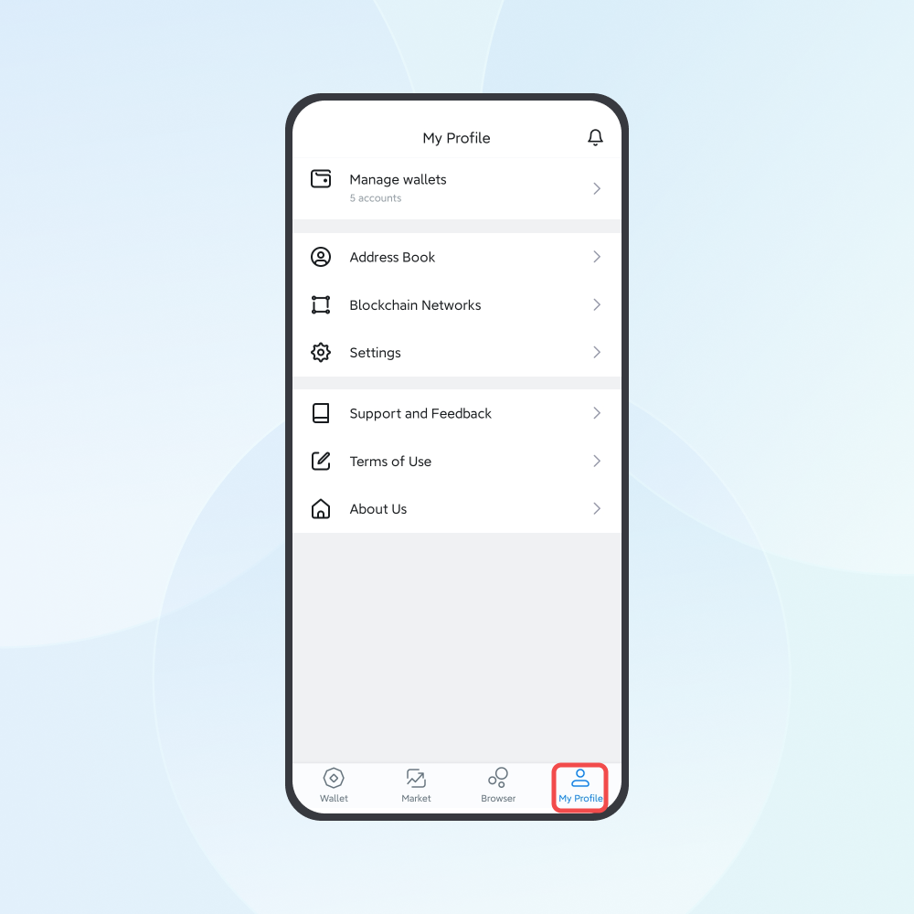

"Wallet", "Market", "Browser", and "My Profile" are the pages offering the four main functions of imToken. New users can get the hang of the wallet by understanding those functions.
Wallet - Access Your Multi-Chain Tokens
imToken supports 50+ mainstream blockchains such as Ethereum, Bitcoin, TRON, Arbitrum, and BSC. You can click the account selection button in the upper left corner of the "Wallet" page to switch to different accounts for token management.
Related Articles:
- How to Transfer and Receive Tokens Through imToken?
- Which Chains and Tokens Does imToken Support?
- Become an Ethereum Validator with imToken ETH Staking
- How Do I Search for and Add a Token to the Assets List?

Market - Swap Your Tokens Safely and Instantly
On the market page, you can get updated on the latest market trend. Also, safe and instant token swapping is available in Tokenlon.
Related Articles:

Browser - Get Access to DApps
imToken features a built-in DApp browser allowing you to enter any DApp on the browser page to visit and use DApps.
- Enter https://app.uniswap.org to swap tokens in Uniswap with one click.
- Enter https://app.ens.domains to register your exclusive ENS domain name.
- Enter https://snapshot.org to participate in on-chain governance.
Alternatively, you can find popular DApps by searching their name, such as "Uniswap".
Related Article:

My Profile - Manage Your imToken Wallet
On the "My Profile" page, you can manage your imToken wallet through "Manage wallets" and "Settings", including backing up the Mnemonic, logging in with your Touch/Face ID, and switching to different languages. If you want to learn more about imToken and how to protect your tokens, please check out "Support and Feedback".
